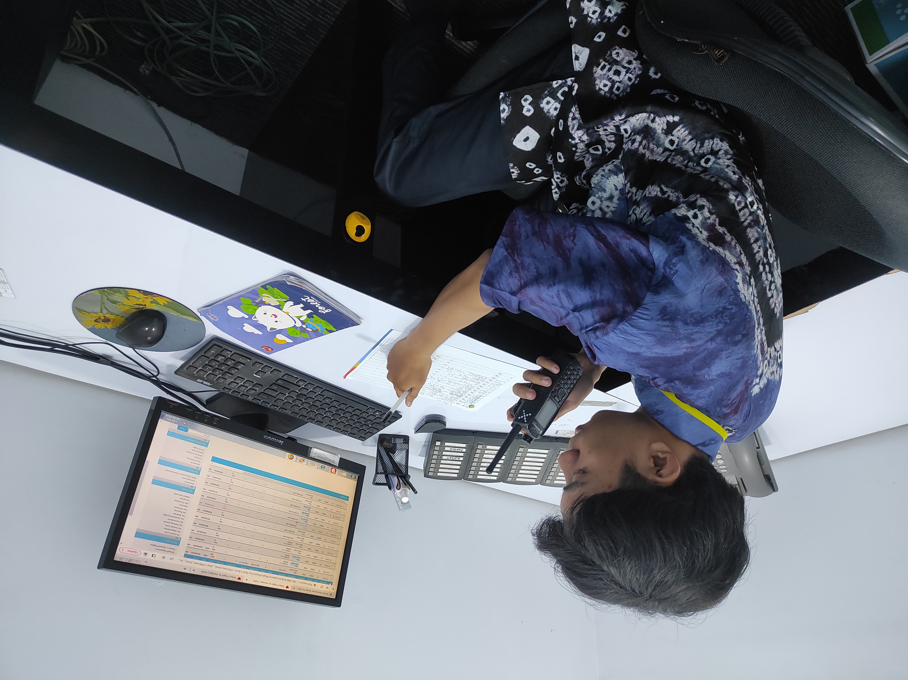
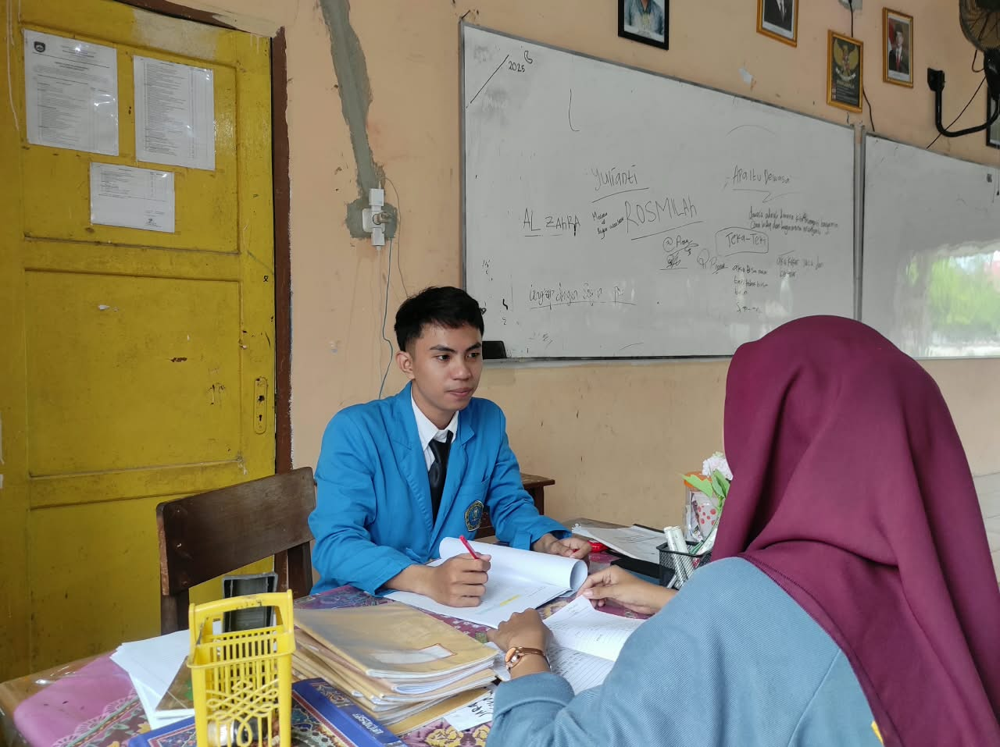
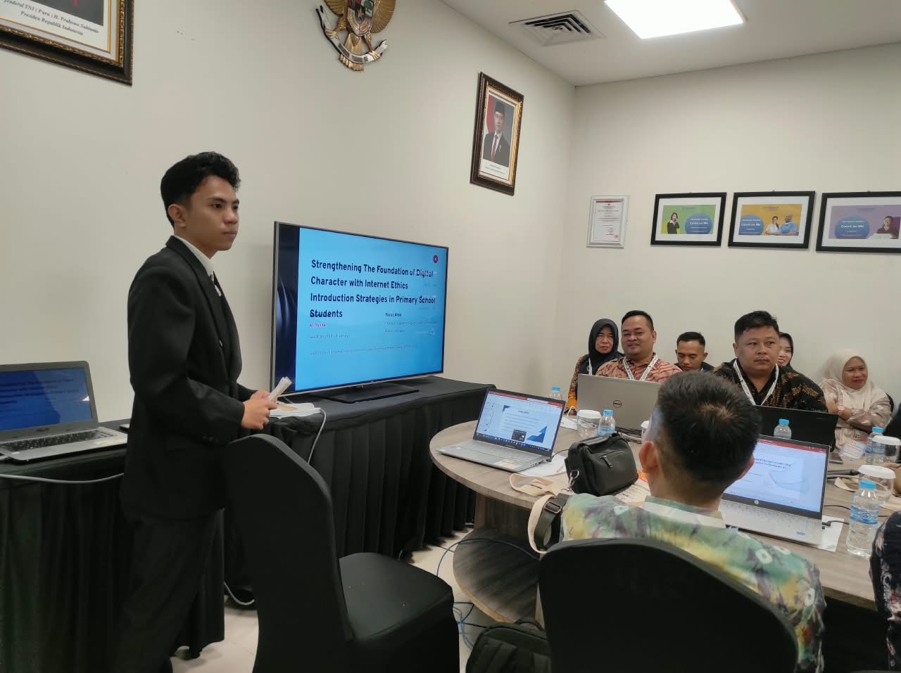

Hello, I'm
Darwawin.
Administration & Data Management
An English Education graduate with experience in school administration, data management, customer service, and F&B operations. Skilled in administrative tasks, digital tools, and customer support, with an interest in technology and continuous professional development.
3.90
GPA
Summa
Cumlaude
Open to
Opportunities

Adaptable
Lifelong learner
Available for
New opportunities
Continuous Learner
Committed to learning and professional growth
About me
Get to Know Me
Hi, I'm Darwawin Perdana Akbar, a graduate of English Education from Universitas PGRI Palembang with a GPA of 3.90 and a Summa Cumlaude distinction. My professional background includes school administration, data entry and validation, customer service, and food and beverage operations.
As a school operator, I managed student and teacher data through Dapodik, maintained administrative documents, prepared reports, and supported coordination with school stakeholders. My airport customer service internship strengthened my communication and complaint-handling skills, while my F&B experience developed my attention to order accuracy, product quality, and workplace cleanliness.
I also have experience preparing English learning materials and teaching activities during my school teaching practice. I am interested in administration, data management, customer service, operations, and digital technology. I value accuracy, teamwork, responsibility, and continuous learning.
Location
Palembang, Indonesia
Languages
Indonesian, English (C1)
Education
S1 English Education
My skills
Skills & Expertise
Practical administrative, digital, communication, and service skills developed through work experience, education, and independent learning.
School Administration & Dapodik
Microsoft Office
Customer Service & Complaint Handling
HTML & CSS (Basic)
WordPress & Visual Studio Code
CorelDRAW & Adobe Photoshop
Canva, CapCut & AI Tools
English Language & Communication
Time Management & Teamwork
F&B Service & Order Accuracy
Document Management & Reporting
My background
Experience & Projects
Professional experience across school administration, customer service, F&B operations, English teaching practice, and event hosting, alongside a web development project.

Work experience · April 2022 – July 2026
School Operator
Bina Citra Sejati Kindergarten, Palembang. Managed and updated student, teacher, and school facility data through Dapodik. Prepared administrative reports, maintained correspondence and records, checked data accuracy, and supported coordination with school stakeholders and the Education Office.
Dapodik
Data Validation
Administration
View School Website

Internship · 2024
Customer Service Officer Intern
InJourney Airports, Sultan Mahmud Badaruddin II Airport, Palembang. Assisted passengers, provided flight and terminal information, supported passenger services, and helped handle customer complaints during the internship.
Customer Service
Communication
Complaint Handling
View Performance

Teaching practice · April – June 2025
English Teaching Practice (PLP)
SMA Negeri 19 Palembang. Taught English to Grade XI classes, prepared teaching materials and lesson modules, supported classroom management, monitored student understanding, and conducted learning assessments in coordination with the supervising teacher.
English Teaching
Lesson Planning
Communication
View Teaching Portfolio

Event hosting · Use the accurate year(s)
English-Speaking Master of Ceremonies (MC)
INCOEPP, Universitas PGRI Palembang. Served as an English-speaking Master of Ceremonies, delivering event announcements and guiding program transitions in English while maintaining clear communication and a professional atmosphere.
English Communication
Public Speaking
Event Hosting
View MC Portfolio
Work experience · July – October 2026
F&B Crew – Beverage Section
Kedai ALOI Mie Ayam OPI, Palembang. Prepared and served beverages according to customer orders, checked order accuracy, monitored ingredients and supplies, and maintained cleanliness and organization in the work area.
F&B Operations
Order Accuracy
Teamwork
Academic background
Education & Training
Academic achievement and technical training that support my professional development.
2022–2026
Bachelor of English Education (S1)
Universitas PGRI Palembang
GPA 3.90
Summa Cumlaude
Graduated with a Summa Cumlaude distinction, awarded at the university's 164th graduation determination on August 22, 2026.
March–September 2021
Information and Communication Technology
Pusat Pendidikan Keterampilan Kerja Siap Pakai
ICT Training
April–June 2019
Microsoft Office Professional 2010 + Internet
Amikom
Microsoft Office
Internet
Let's connect
Have an opportunity in mind?
Feel free to contact me for job opportunities, collaboration, or professional inquiries. I am open to opportunities in administration, data management, customer service, operations, and related fields.